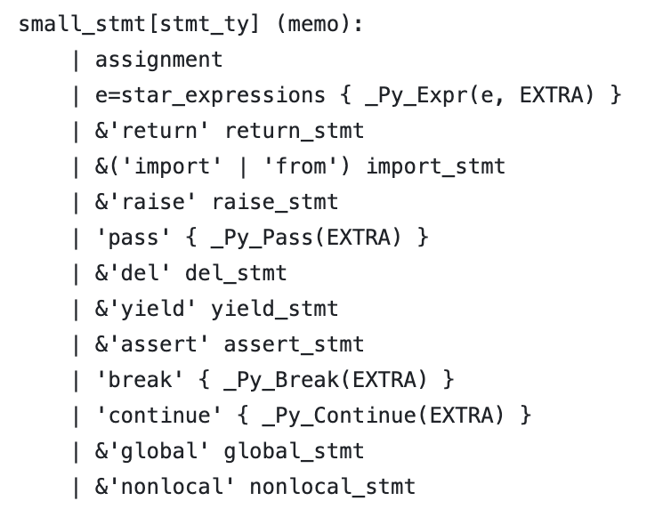
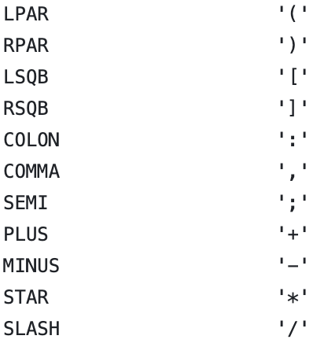
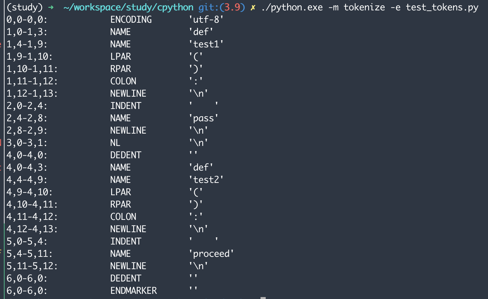

파이썬 언어와 문법#
4.1 CPython이 파이썬이 아니라 C로 작성된 이유#
CPython은 C로 만들어진 컴파일러를 사용한다.
파이썬에서 이용하는 많은 라이브러리가 C로 되어있기 때문
4.2 파이썬 언어 사양#
언어 레퍼넌스#
Doc/reference에 언어의 구조, 키워드를 정의해둔다
문법#
PEG 표현식을 이용
* 반복을 의미
+ 최소 한번의 반복
[] 선택적
| 대안
() 그룹
eg) coffee: ‘cup’ (‘espresso’) + [‘water’] [milk]
milk: ‘full-fat’ | ‘skimmed’ | ‘soy’
철도 다이어그램

Parser#
Grammar/python.gram에 파이썬 문법이 PEG로 정의가 되어있다

'pass' { _Py_Pass(EXTRA) }
줄을
('pass'|'proceed') { _Py_Pass(EXTRA) }
로 바꾸고 컴파일 하면,
proceed라는 함수가 pass랑 동일한 action을 하게 된다
def test1():
pass
def test2():
proceed
위에서 test1()이랑 test2()의 action은 동일하다.
python.gram파일 수정을 통해서 파이썬 문법을 변경할 수 있다
4.4 토큰#
Grammar/Tokens 파일은 파스 트리의 Leaf node에서 사용되는 고유 토큰들을 정의한다. 코드 tokenization은 추후에 compiling할때 이용된다.

python코드가 tokenizer를 통해서 토큰으로 파싱이 된다. 위 코드를 tokenize를 하면:
